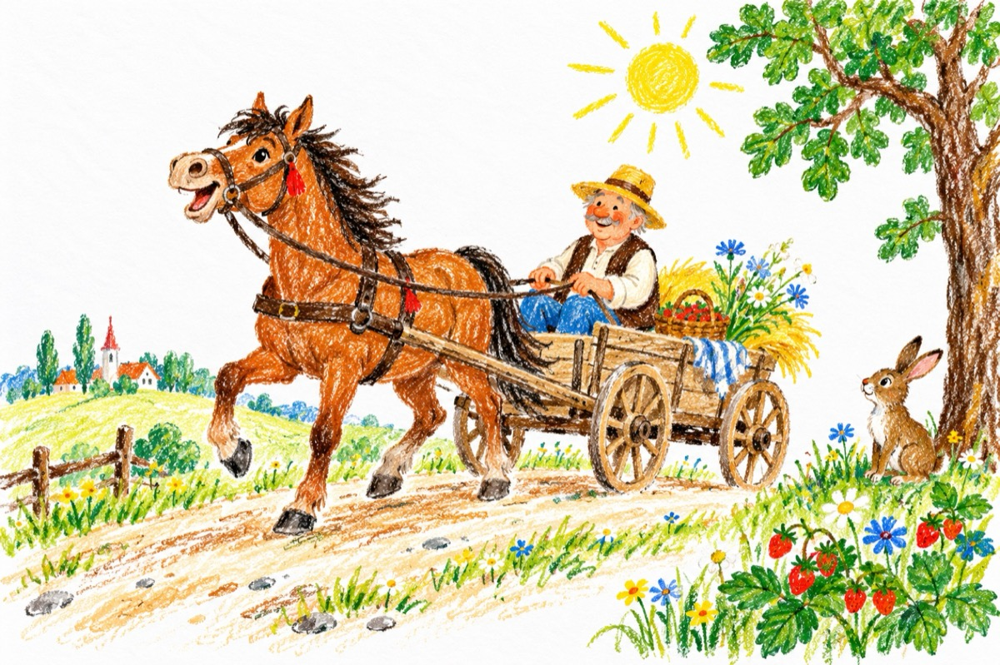

Tropa tropa
Tropăind pe drum de țară
În căruța cu un cal,
Străbătând în plină vară
Ba o vale, ba un deal...
Prin dumbrava minunată,
Printre pomi și fragi și flori,
Cu o ,,voce’’ nechezată
Scoasă aprig printre nări,
Calul cu al său birjar,
Spintecă natura vie
Ghindele dorm sub stejar
Totu-i prins în poezie!
Tropătu-n ecou pornește,
Împânzind poienile,
Cerbul mersul își oprește,
Fluturându-și coarnele,
Un mistreț ce dă la jir,
Joacă ochii prin prejur,
Încordând picioarele
Spintecă dur tufele,
Lupul ce-și ascuțea dinții
Și visa cu ochii minții
La vreo oaie bucălată -
Fuge lăsând totul baltă,
Iar o cioară mai nătângă,
A venit să se convingă,
Croncănind a mântuială
Că nu e nici o scofală!
E un cal fără habar
Ce-i mânat de un birjar!
Iepurașii coada-și mișcă
Și-și ciulesc urechile
Cine liniștea le-o strică,
Răscolind potecile?!...
Calu-atunci se enervează
Și pe nări din nou nechează:
Ni ha ha și ni ha ha!...
Răspunde Măria sa!
Vasile Groza